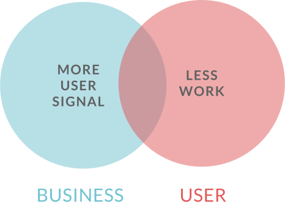

At Quora, I was able to work on many parts of the product. I was drawn
to improving the New User Experience (NUX) in particular, because it was
often the target of user criticism. Given its importance, I felt it was
not receiving as much attention as it deserved. I started with running
many small experiments to understand the space as best I could.
Eventually, I fully assumed the responsibility of improving NUX.
The Old NUX
After a new user signs up using their social media account or email
address, they have to complete a few more steps before they can read
content on Quora.
Follow Topics

In the first screen of our old NUX, we asked users to follow topics so we could
collect explicit signal on what the user likes to read. The options had no
significance and were arbitrarily selected a few years ago. As the user selects
a topic, new options are dynamically added to the very bottom of the list. The
user could only continue to the next step once they have followed at least 10
topics.
Add Knows About Topics
The next step was important for collecting signal on the user's experiences and
areas of expertise. We needed to learn what kinds of questions we can route to
the user based off their self-reported expertise and, if they fill out their
topic biography, professional credentials.
When users sign up, they want to read great content right away. Some users
felt that Quora was putting unnecessary work between them and the content.
However at this point in time, Quora needed explicit signal to serve the
most relevant questions to the new users. Therefore, we learned that we
needed to keep the step, for now.

I explored the problem further by conducting research via user interviews,
workshops, and brainstorms. Although we had to keep the step, it did not
mean that our NUX had to be as painful as it was for our users. The
research boiled down to two main problems.
Problem 1
Users perceived the product as untrustworthy due to low
design quality and product transparency.
Problem 2
Users did not understand why they were forced to do more work
to see content when they have already created their accounts.
I took the problems and transformed them into goals and principles to
guide the eventual NUX redesign and experiments.
Trust ++
The new experience should present itself as a carefully crafted and
transparent product (i.e. beautifully show the value).
Simplicity ++
The new experience should reduce cognitive load to help the user
complete the signup process faster and with less effort (e.g.,
presenting fewer options, simple words).
Retention +
User Signal +
Brand +
Engagement +
User Signal +
Completion +
Our qualitative goals had to be measured using metrics and user
feedback. I worked with the project manager to determine which metrics
to use as a proxy for measuring success. I designed a new concept to
achieve a more trustworthy and simple NUX. We anticipate a big gain in
brand, which is often an improvement that takes time to take effect.
I designed a new concept to achieve a more trustworthy and simple NUX.
Clearer Design & Navigation
Users now have a clearer understanding of the signup process
Fewer Choices
Users have to pick from only a few topics at signup
Simpler wording
Users can parse short and concise language faster and with less
cognitive load
My NUX Concept